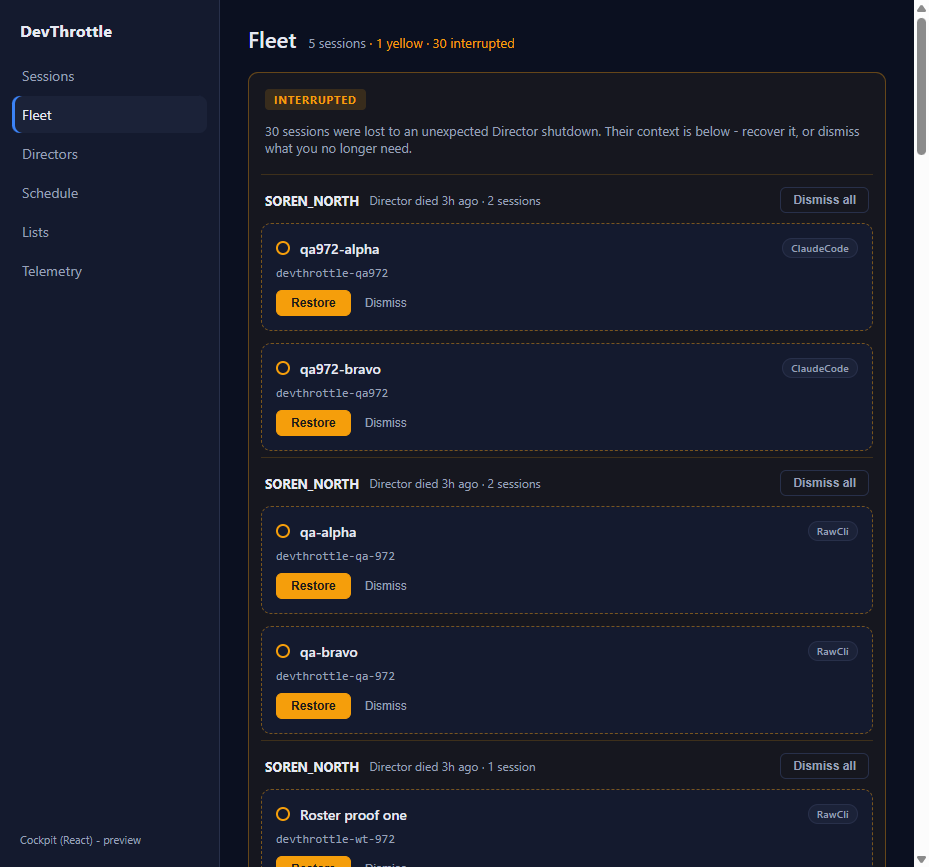
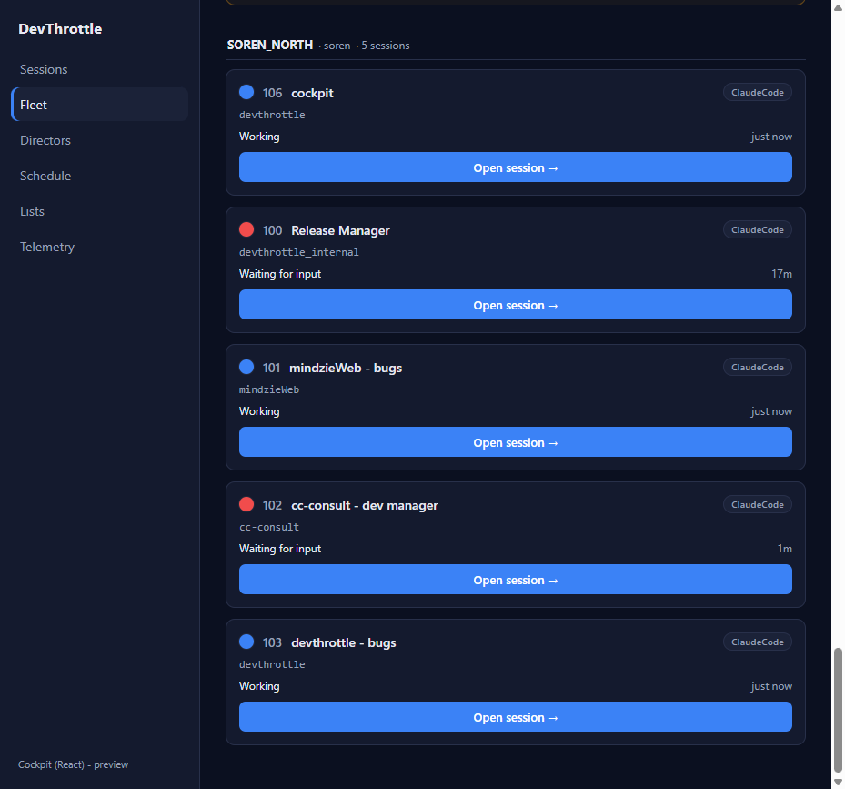
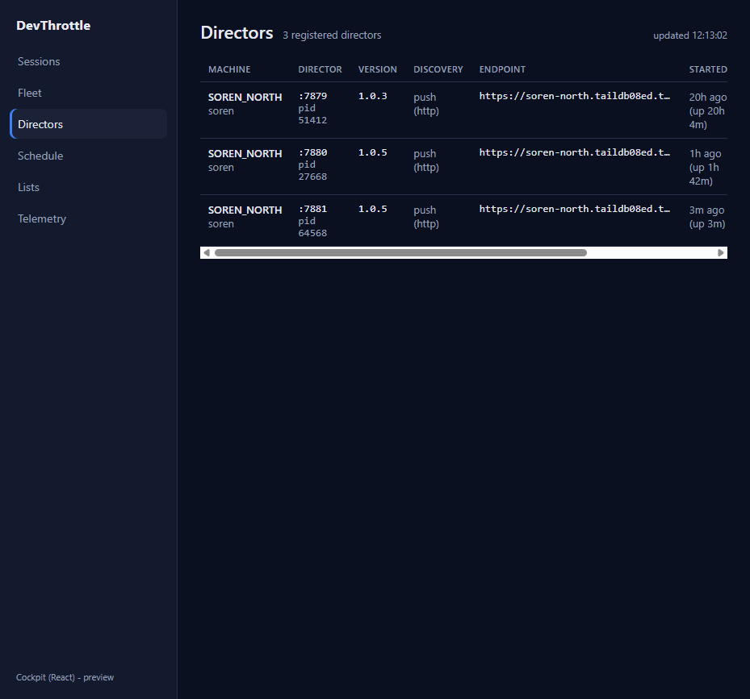
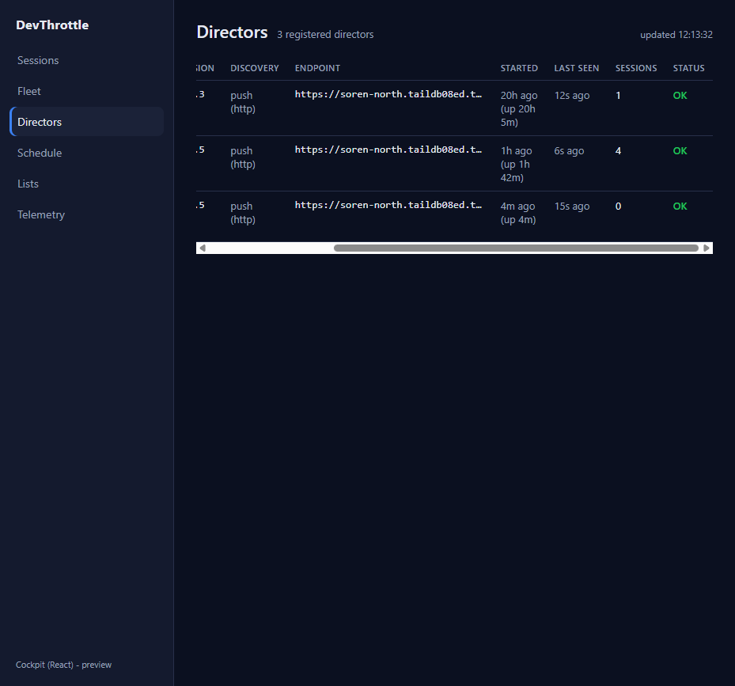
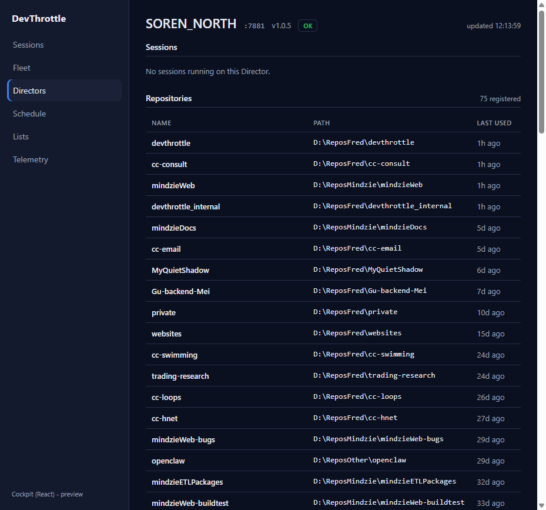
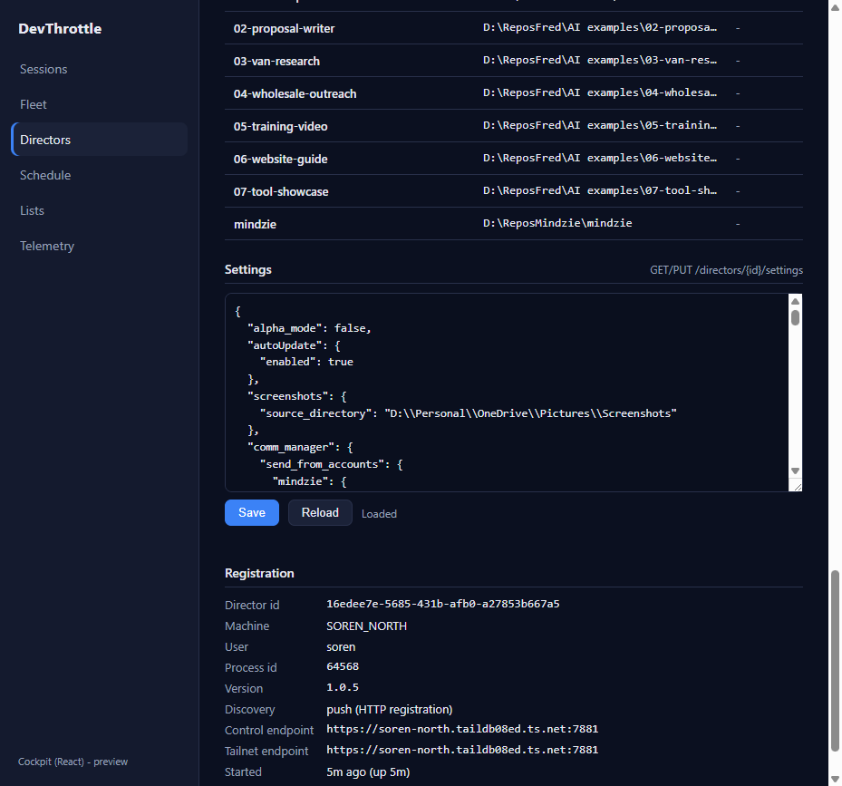
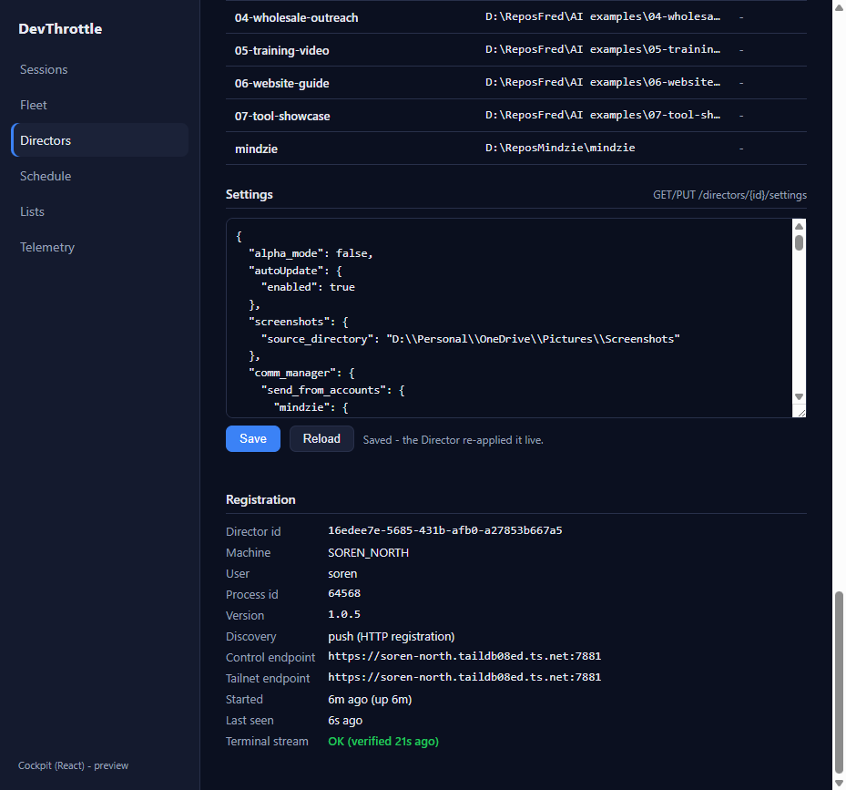

Issue #975 - QA verification (independent)
Independent QA of PR #1005 (branch issue-975-fleet-directors): the one-to-one React
Cockpit port of the Blazor Fleet.razor, Directors.razor, and
DirectorDetail.razor pages. Verified in a fresh isolated worktree, built from scratch,
and driven live against the running Gateway - not the Developer's binary or screenshots.
Independent QA identity
Isolated worktree + fresh build
Settings PUT on own isolated Director (slot 15)
Build gate - all clean (rebuilt in the QA worktree)
| Gate | Command | Result |
|---|---|---|
| Cockpit build (tsc --noEmit + vite) | npm run build --workspace @devthrottle/cockpit | PASS - 0 errors, built in ~1.1s |
| Lint (Gateway-only-ingress, no absolute URLs) | npm run lint | PASS - exit 0 |
| Gateway release + cockpit staging | dotnet build ...Gateway.csproj -p:RunCockpitBuild=true -c Release | Build succeeded, 0 Warning(s), 0 Error(s) |
| Full solution | dotnet build cc-director.sln | Build succeeded, 0 Warning(s), 0 Error(s) |
Acceptance criteria - independently verified
| Criterion | Expected | Actual (observed live) | Verdict |
|---|---|---|---|
| Fleet renders the same information and actions as the Blazor page. | Machine-grouped session cards with effective status dot, session number, agent badge, repo, state + idle, inline rename, Open-session link, and the Interrupted recovery panel (Restore / Dismiss / Dismiss all). | All present. Header "Fleet - 5 sessions - 1 yellow/2 red - 30 interrupted"; INTERRUPTED panel grouped by dead Director with per-card Restore/Dismiss and group Dismiss all; live roster grouped under MACHINE-A with numbered cards (106/100/101/102/103), colour dots, Working / Waiting for input states, idle times, and Open session deep links. | PASS |
| Directors list renders real Directors. | Paged table over GET /directors with live session counts and status. |
3 registered Directors listed (the two live ones plus the QA isolated Director :7881); Machine, Director port/pid, Version, Discovery, Endpoint, Started+uptime, Last seen, live Sessions counts (1 / 4 / 0), and OK status all render. | PASS |
| Director detail opens. | Registration facts, health, this Director's sessions, and its repositories. | Opened the QA isolated Director: header "MACHINE-A :7881 v1.0.5 OK", "No sessions running" (it had none), Repositories "75 registered" table, Registration facts (id/pid/version/ endpoints), and "Terminal stream OK (verified 21s ago)". | PASS |
| Director settings read/write round-trips (routed by Director id through the Gateway). | Load reads GET /directors/{id}/settings and pretty-prints; Save writes
PUT /directors/{id}/settings and the Director re-applies live. |
Load returned 5347 chars of pretty-printed JSON, status "Loaded". Save returned
"Saved - the Director re-applied it live." The write was confirmed in the isolated Director's
own log: [SettingsEndpoint] PUT /settings ->
ReapplyGatewayAsync: reloading gateway config ->
PUT /settings -> 200 (214ms) client=127.0.0.1. Performed ONLY against the QA
isolated Director (id 16edee7e..., pid 64568) - never a user Director. |
PASS |
| No absolute URLs in the client (lint rule passes). | Every request root-relative through client-core; no http/https/ws/wss literals. |
npm run lint exit 0. Code review of fleetClient.ts confirms all
fetches are root-relative (/directors, /sessions?envelope=true,
/interrupted/..., /directors/{id}/settings). |
PASS |
| The Blazor paths can flip to React with no loss of function. | Same endpoints, same ordering/colour policy, same actions. | Confirmed by source diff: React fleetClient calls the same Gateway endpoints the Blazor
GatewayClient/DirectorClient use, and the pages reuse
client-core/sessions/ordering (effectiveColor/dotColor/inDesktopOrder). All
information and actions reproduced. |
PASS |
Regression / method sweep
- No CenCon architecture or security drift: client-side port over the existing Gateway REST surface; no new endpoints, no server logic change; Gateway-only-ingress preserved (lint pass).
- No absolute URLs introduced; the dev proxy target is read from the environment.
- Nothing adjacent broke: full solution and Gateway release build clean.
Evidence (QA-captured screenshots)







VERIFIED - all acceptance criteria met. Independently reproduced; build gate clean; settings write proven end-to-end against a QA-owned isolated Director.